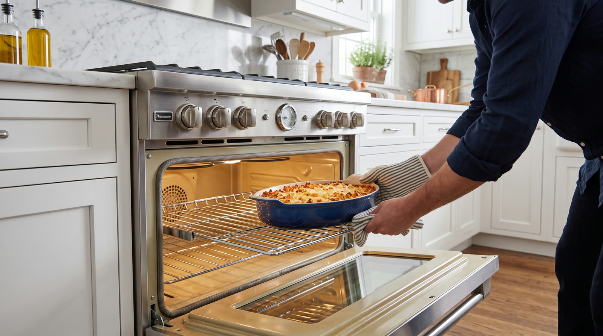

Thermador cooking
Sagging, slamming, or sealing badly. A failing door costs heat, energy, and eventually the cabinetry beside it.

Thermador oven doors are substantial, and the hinge hardware carrying them wears on a predictable schedule. Early signs are subtle. The door needs a lift to latch, or drops slightly as it opens. Later the gasket stops meeting the frame evenly, heat pours past it, preheats stretch, bakes go uneven, and the cabinet faces nearby run hot.
A proper repair treats the door as a system. Hinges replaced in matched pairs, springs renewed together, the receivers in the frame inspected for wear, the gasket replaced if it has stiffened, and the door aligned until the seal touches evenly on all four sides. Half measures on doors come back, so we do not sell them.
The signature failure. The door rides lower every month until the gasket cannot do its work. Pairs only, never singles, so the load carries straight.
A door that falls open or slams shut has lost its counterbalance. Springs stretch long before anything visibly breaks.
Years of heat cycles harden the seal. Run a hand near the door edge during preheat and a failed gasket announces itself.
The sockets in the oven frame slowly egg out under the door weight. New hinges in worn receivers fail young, so we address both.
We would wait. The oven runs longer and hotter fighting the leak, components age faster, and the escaping heat works on your cabinets the whole time.
A fresh hinge against a tired one carries the door crooked, chews through the new part, and puts you right back here. Matched pairs keep the geometry true.
Often, yes. A leaking seal lets vapor migrate between panes. We can open the door assembly, clean the glass, and cure the leak that let it in.
One phone call and the problem becomes ours. Open daily, 7am to 7pm.
First callers get first pick of the same day windows. The $89 diagnostic credits toward the repair, so the answer itself ends up costing nothing.